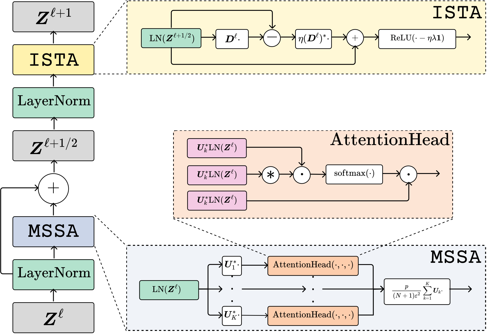
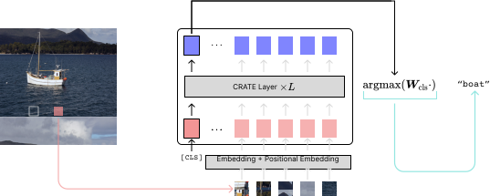
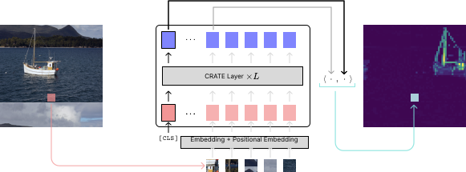

TLDR: CRATE is a transformer-like architecture which is constructed through first principles and has competitive performance on standard tasks while also enjoying many side benefits.
What is CRATE?
CRATE (Coding RAte reduction TransformEr) is a white-box (mathematically interpretable) transformer architecture, where each layer performs a single step of an alternating minimization algorithm to optimize the sparse rate reduction objective
\[\max_{f}\mathbb{E}_{\mathbf{Z} = f(\mathbf{X})}[\Delta R(\mathbf{Z} \mid \mathbf{U}_{[K]}) - \lambda \|\mathbf{Z}\|_{0}],\]
where the \(\ell^{0}\) norm promotes the sparsity of the final token representations \(\mathbf{Z} = f(\mathbf{X})\). The function \(f\) is defined as
\[f = f^{L} \circ f^{L - 1} \circ \cdots \circ f^{1} \circ f^{0},\]
where \(f^{0}\) is the pre-processing mapping, and \(f^{\ell}\) is the \(\ell^{\mathrm{th}}\)-layer forward mapping that transforms the token distribution to optimize the above sparse rate reduction objective incrementally. More specifically, \(f^{\ell}\) transforms the token representations \(\mathbf{Z}^{\ell}\), which are the representations at the input of the \(\ell^{\mathrm{th}}\) layer, to \(\mathbf{Z}^{\ell + 1}\) via the \(\texttt{MSSA}\) (Multi-Head Subspace Self-Attention) block and the
\(\texttt{ISTA}\) (Iterative Shrinkage-Thresholding Algorithm) block, i.e.,
\[\mathbf{Z}^{\ell + 1} = f^{\ell}(\mathbf{Z}^{\ell}) = \texttt{ISTA}(\mathbf{Z}^{\ell} + \texttt{MSSA}(\mathbf{Z}^{\ell})).\]
Architecture
The following figure presents an overview of the general CRATE architecture:

After encoding input data \(\mathbf{X}\) as a sequence of tokens \(\mathbf{Z}^0\), CRATE constructs a deep network that transforms the data to a canonical configuration of low-dimensional subspaces by successive
The following figure presents a graphic of a single layer for the CRATE architecture:

The full architecture is simply a concatenation of such layers, with some initial tokenizer and final task-specific architecture (i.e., a classification head).
Classification
Below, the classification pipeline for CRATE is depicted. It is virtually identical to the popular vision transformer.

We use soft-max cross entropy loss to train on the supervised image classification task. We obtain competitive performance with the usual vision transformer (ViT) trained on classification, with similar scaling behavior, including above 80% top-1 accuracy on ImageNet-1K with 25% of the parameters of ViT.
Segmentation and Detection
An interesting phenomenon of CRATE is that even when trained on supervised classification, it learns to segment the input images, with such segmentations being easily recoverable via attention maps, as in the following pipeline (similar to DINO).

Such segmentations were only previously seen in transformer-like architectures using a complex self-supervised training mechanism as in DINO, yet in CRATE segmentation emerges as a byproduct of supervised classification training, where the model does not obtain any a priori segmentation information at any time. Below, we show some example segmentations.

Another remarkable property is that attention heads in CRATE automatically carry semantic meaning, which implies that CRATE may have post-hoc interpretability for any classification it makes. Below, we visualize the output of some attention heads across several images and several animals, showing that some attention heads correspond to different parts of the animal.

Citation Information
- White-Box Transformers via Sparse Rate Reduction
@misc{yu2023whitebox,
title={White-Box Transformers via Sparse Rate Reduction},
author={Yaodong Yu and Sam Buchanan and Druv Pai and Tianzhe Chu and Ziyang Wu and Shengbang Tong and Benjamin D. Haeffele and Yi Ma},
year={2023},
eprint={2306.01129},
archivePrefix={arXiv},
primaryClass={cs.LG}
}
- Emergence of Segmentation with Minimalistic White-Box Transformers
@misc{yu2023emergence,
title={Emergence of Segmentation with Minimalistic White-Box Transformers},
author={Yaodong Yu and Tianzhe Chu and Shengbang Tong and Ziyang Wu and Druv Pai and Sam Buchanan and Yi Ma},
year={2023},
eprint={2308.16271},
archivePrefix={arXiv},
primaryClass={cs.CV}
}
Funding Acknowledgement
This work is partially supported by the ONR grant N00014-22-1-2102, and the joint Simons Foundation-NSF DMS grant 2031899.